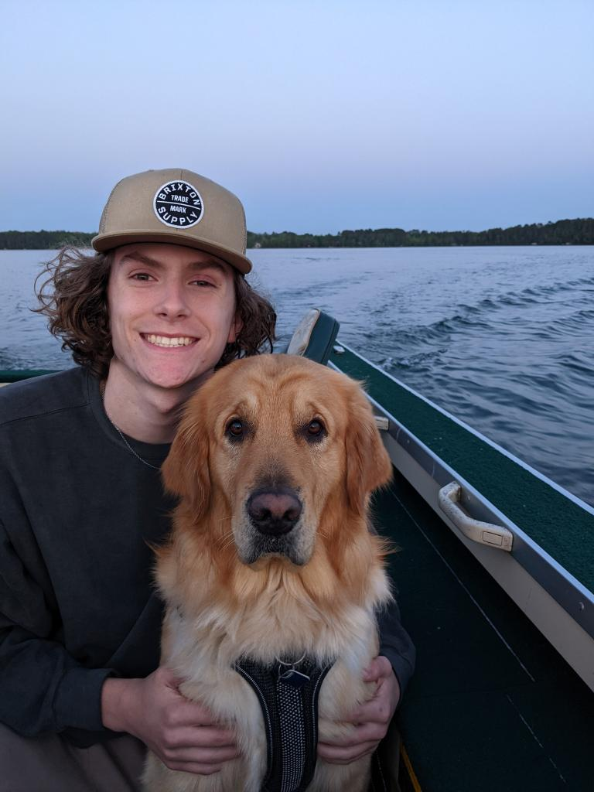

About Me
My name is Nick Calabrese, I am 19 years old, I go to Illinois State University and I am a sophomore. I am majoring in Creative Technologies. I love making art and alowing my creatvie talent to inspire and impress others.
My name is Nick Calabrese, I am 19 years old, I go to Illinois State University and I am a sophomore. I am majoring in Creative Technologies. I love making art and alowing my creatvie talent to inspire and impress others.
I have always loved creating things whether it be art, music, stories or graphic design. I love to make things for others and I to enjoy. Having people react and be impacted by things that have come from my imagination gives me a true sence of joy.

My main goal for my future, when it comes to creating, is to make art in many forms of media that can inspire, and make people feel and react a certain way. I've consumed a lot of media like tv shows, art,games, books and I love the feeling I get when I see some crazy new idea I've never seen before. I want to make others feel that way too. I love to make board games for my friends and family to play. Seeing them all playing something I made, and really enjoying it, makes me very happy. My goal is to keep learning more which will make my work even better, and continue for me to recieve their reactions and their love for my game.